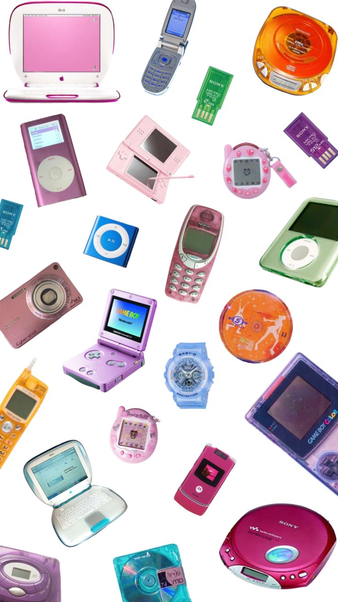
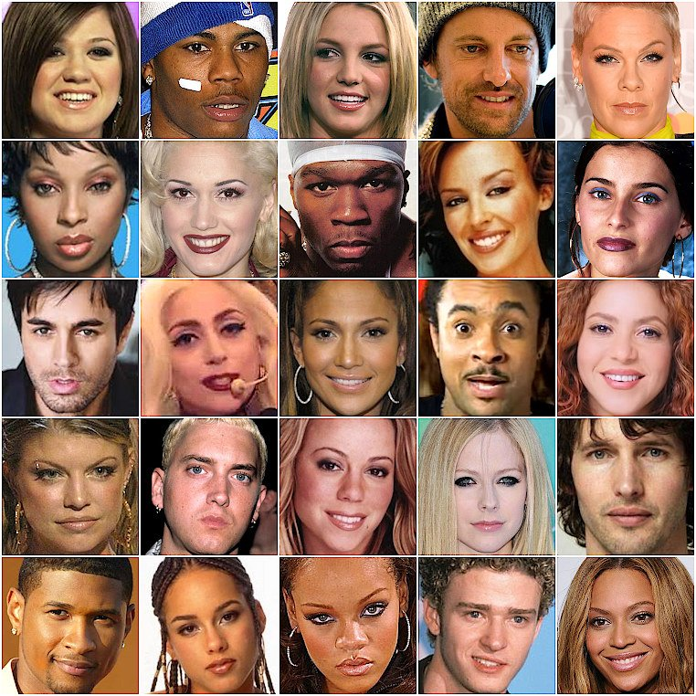

Y2K nostalgia refers to a longing or fondness for the cultural elements, technology, and trends that were
prominent around the time of the year 2000, particularly as the new millennium approached.
One aspect of Y2K nostalgia is:
Pop Culture:
Y2K nostalgia often involves a resurgence of interest in pop culture phenomena from the era, including
boy
bands like *NSYNC and the Backstreet Boys, teen movies like "Clueless" and "American Pie," and TV shows
like
"Friends" and "Buffy the Vampire Slayer."
More aspects of Y2K nostalgia are:
Fashion
Fashion: The fashion trends of the late 90s and early 2000s, including baggy jeans, cargo pants, crop
tops,
platform shoes, and tracksuits, evoke a sense of nostalgia for many.
Technology
Technology: Nostalgia for gadgets and electronics from the late 90s and early 2000s, such as flip phones,
dial-up internet, bulky CRT monitors, and early video game consoles like the Nintendo 64 and
PlayStation.

Music
The music of the late 90s and early 2000s, ranging from pop to hip-hop to alternative rock, holds a
special
place in the hearts of many who grew up during that time.

Overall, the Y2K aesthetic celebrates the eclectic and vibrant visual culture of the late 90s and early
2000s, offering a nostalgic journey back to a time of optimism, experimentation, and technological
innovation.